DATASCI 306
Lecture 7
Recap from Lecture 6
- Practice with dplyr and relational data
- Beginning plots with ggplot
Questions for the next 3 lectures
- What is the job market like right now?
- Where is it headed in the near future?
- How is AI reshaping the job market?
Today’s lecture
- Explore a new dataset on job postings.
- See examples of good and bad plots.
- Learn how to make great plots.
Job market data
What is exploratory data analysis

Procedures for analyzing data, techniques for interpreting the results of such procedures, ways of planning the gathering of data to make its analysis easier, more precise or more accurate, and all the machinery and results of (mathematical) statistics which apply to analyzing data.
- John Tukey
Goals of EDA
Two types of questions are always useful for making discoveries within your data:
- What type of variation occurs within my variables?
- What type of covariation occurs between my variables?
Basic rules for making good plots
- Label the axes.
- Include units.
- Explain anything that is “encoded” (color scales, size variation, etc.)
- Use appropriate geometry.
- Include sources/attribution.
- Use the simplest possible design necessary to convey the information.
One continuous variable: histogram
A histogram visualizes the variation within a single continuous variable.
Two continuous variables: scatterplot
A scatterplot visualizes the covariation between two continuous variables.
Choosing the right coordinates
The default coordinate system is Cartesian (x-y axes at right angles) and spans the entire range of the data, but this doesn’t always make sense.
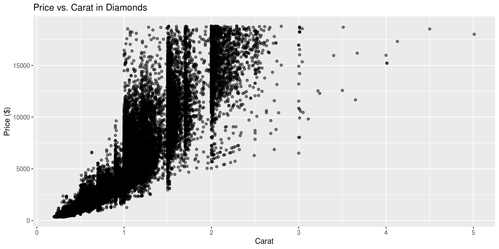One discrete variable: bar plot
A bar plot visualizes the variation within a single discrete variable.
Bar plot of states
One discrete and one continuous variable: boxplot
A boxplot visualizes the covariation between a discrete and a continuous variable.
Interpreting a boxplot
A boxplot summarizes the distribution of a continuous variable within each level of a discrete variable.
- The box spans the interquartile range (IQR), which contains the middle 50% of the data.
- The line inside the box is the median (50th percentile).
- The “whiskers” extend to the most extreme data points that are not considered outliers. (Typically, this is 1.5 times the IQR beyond the box.)
- Points beyond the whiskers are considered outliers and plotted individually.
Two discrete variables: heatmap
A heatmap visualizes the covariation between two discrete variables.
Examples of good and bad visualizations
Here are some examples of good and bad visualizations I have seen recently while wasting time working online.
Good: Euro crisis

euro
Bad: European ancestry
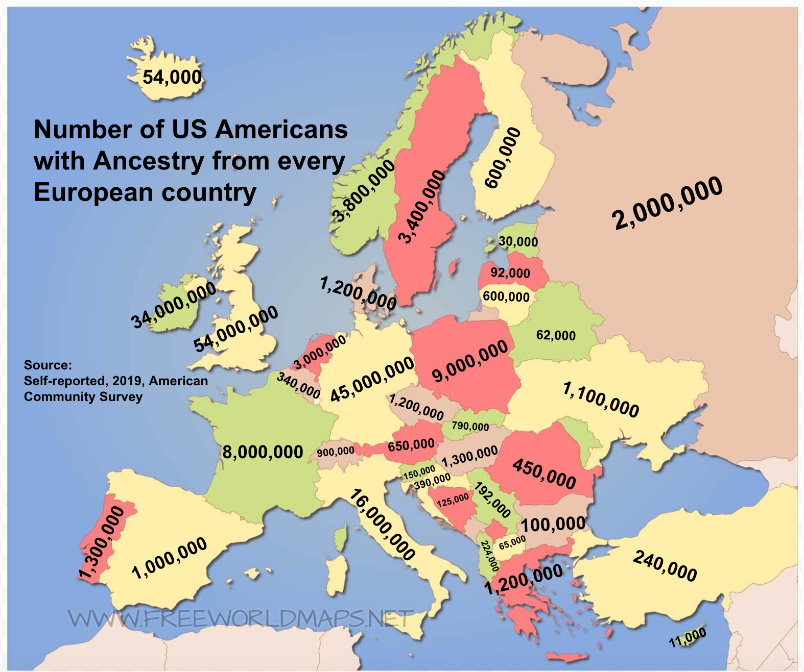euro_bad
Abusing the y-axis
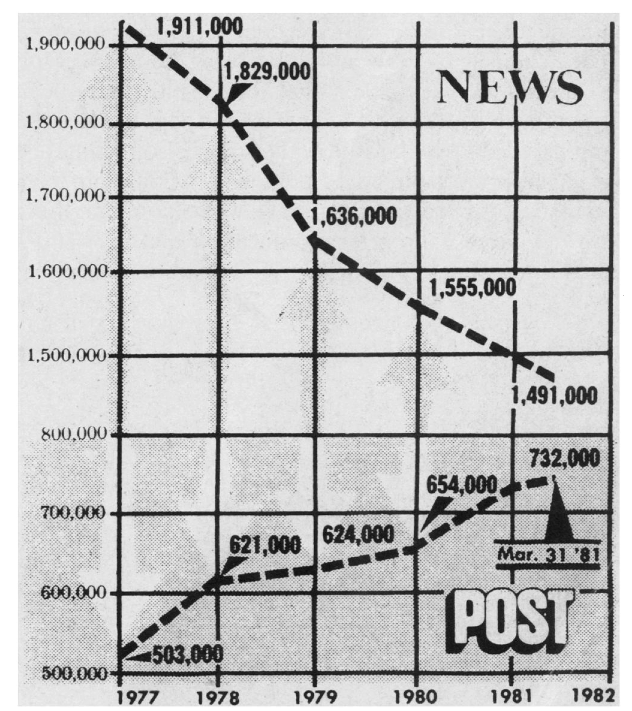newspapers
More abuse

biden vs trump
131%
image4.png
Make it better
A giant amongst women
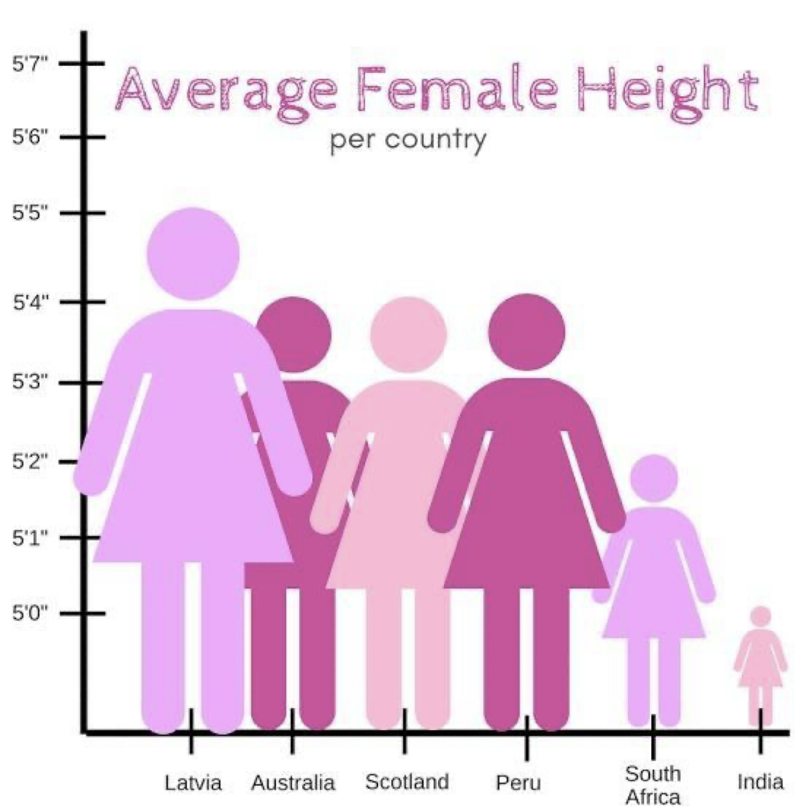image6.png
Make it better
Bangalore
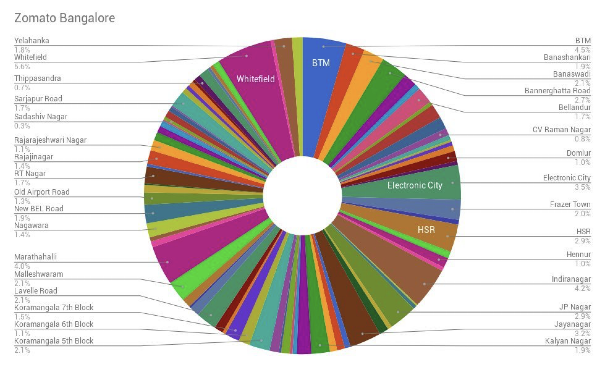bangalore
Alotofinformationforsuchasmallspace
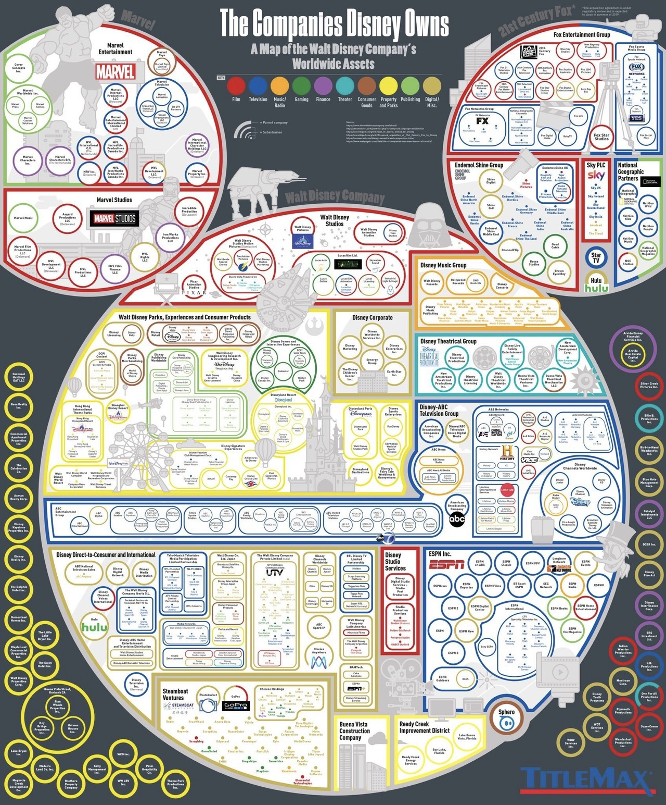image5.png
y-not
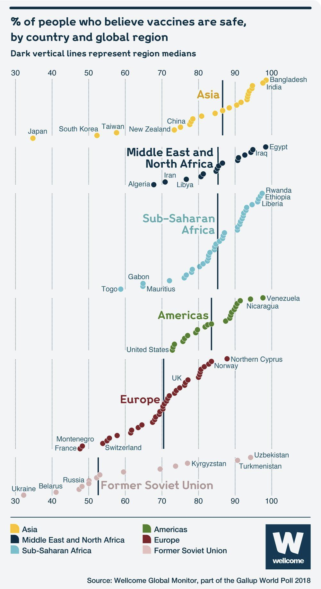image7.png
Time warp
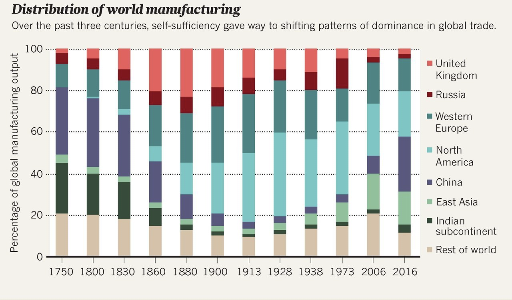image8.png
Tips for making bad plots
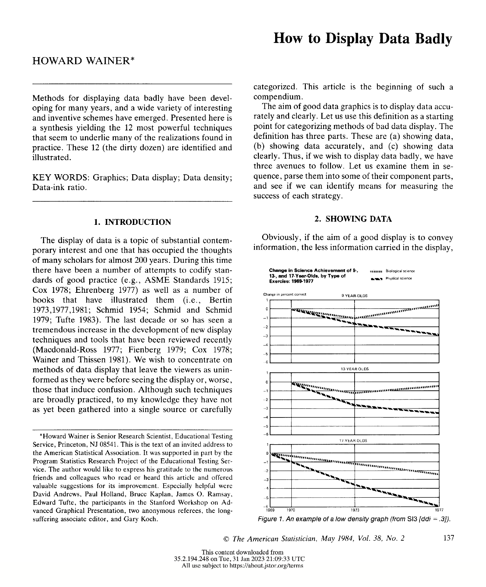display data badly
Show as Few Data as Possible
- Tufte (famous data viz person) defines the “data density index” (ddi) as “the number of numbers plotted per square inch.”
- In order to make a bad plot, you want to strive for a ddi that is as low as possible.
- Rough guidelines:
- \(\text{ddi}=1\): novice
- \(\text{ddi}=.5\): intermediate
- \(\text{ddi}=.1\): elite-level, or first-year art student
- (Anything above ddi=20 places you at risk of making a good plot.)
Low ddi
image11.png
There are three numbers plotted in a \(5\times 3 \text{in}\) graphic, so \(\text{ddi}=.2\).
Make it better
Lower ddi
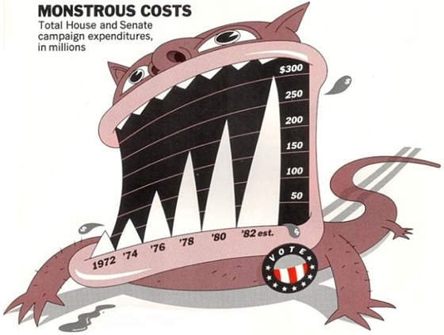 ## Make it better
Hide the data
- In situations where it is necessary to show data, make sure it is well hidden.
- Add visual distractions such as grids, illustrations, and other doo-dads that draw the eye away from the data points.
- Minimize variation by choosing a scale that is several order of magnitude larger than the natural range of the data.
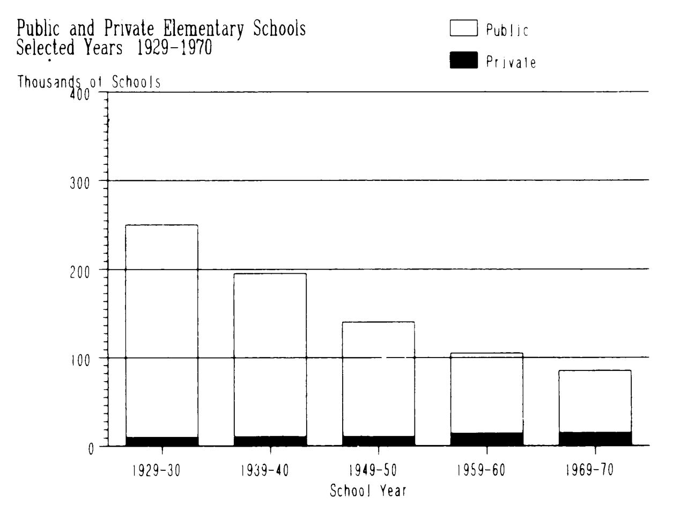 ## Make it better
Trick the eye
The human eye is easily deceived by changes in ordering, scale, and visual metaphor: - Switch up the scale, preferably in the same plot. - Represent smaller numbers using larger objects, and vice versa. - Represent lengths by area.
image16.png
Make it better
df3 <- tribble(
~year, ~president, ~ppower,
1958, "eisenhower", 1.0,
1963, "kennedy", .94,
1968, "johnson", .83,
1973, "nixon", .64,
1975, "ford", .60,
1978, "carter", .44
)